Artificial Neural Networks and other Learning Systems - Lab 2
Contents
1. Introduction
In this lab we use Radial Basis Functions (RBF) to approximate some simple functions of one variable. Suppose we have the function 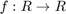. RBF introduces a hidden layer such that 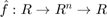, where is the number of neurons in the hidden layer. The trick basically consists on mapping an input 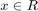 to a new space 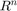 using a set of functions 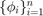 and then back to 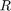. The functions used are Gaussians with different means and, possibly, also different variances

Radial comes from the fact that the functions operate on distances rather than on the input points themselves. In this regard, the selection of  is essential and is typically done using K-means or by simply selecting some points from the training set. Given an input 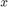 the output of the network is
is essential and is typically done using K-means or by simply selecting some points from the training set. Given an input 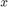 the output of the network is

Thus we can say that the units in the hidden layer work as basis in which the function  can be expressed. The motivation behind this technique is the fact that in higher dimensional spaces, data is usually linearly separable. Suppose we have a set of patterns 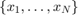 and their corresponding real function values 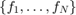. While training, the neural network minimizes the error measure
can be expressed. The motivation behind this technique is the fact that in higher dimensional spaces, data is usually linearly separable. Suppose we have a set of patterns 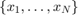 and their corresponding real function values 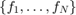. While training, the neural network minimizes the error measure
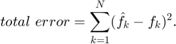
Computing the weight matrix
The weights of the network are found by solving the following system
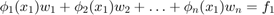
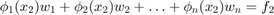
...
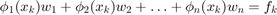
...
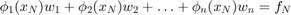
Question What is the lower bound for the number of training examples, 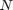?
From basic linear algebra, we need at least equations in a system with variables. Otherwise, the system is underdefined. Hence, we have that  . If the number of samples is smaller than the number of hidden units, some units will end up doing nothing or doing the same thing as other units (i.e. will activate around the same point in the input space)
. If the number of samples is smaller than the number of hidden units, some units will end up doing nothing or doing the same thing as other units (i.e. will activate around the same point in the input space)
Question What happens with the error if 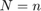? Why?
If this is the case, and the system is full-rank, we have that we can find a set of weights 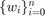 such that we perfectly reconstruct the target function, i.e. 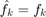 for all the training samples. Thus we can decrease the error to zero. From the network perspective what will happen is that every RBF unit will "specialize" in one single training point. For this reason, every time we feed an input there will be only one unit active and the others will be off, making it trivial for the following layer to classify the point. However, this is not a desirable behavior, because the network will have overfitted on the training points and will underperform on unseen data.
Question Under what conditions, if any, does (\ref{eq:1}) have a solution in this case?
This happens if the rank per columns and the rank per rows is the same.
Question During training we use an error measure defined over the training examples. Is it good to use this measure when evaluating the performance of the network? Explain! Although we can make the error zero on the training set, it does not mean that the network will perform well with unseen data. On the contrary, we risk to overfit the network and reduce its generalization power.
Least Squares
Now our error measure becomes 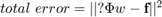, which is minimized by solving 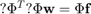, i.e.
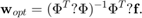
The Delta Rule
Sometimes, not all the sample patterns are accessible simultaneously. If the network operates on a continuous stream of data, the process of computing the weights changes from the previous case. We now define our error using the expectation
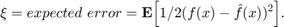
However, since we cannot find an exact expression for 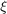 we use the instantaneous error as an estimate of , i.e.
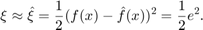
Our goal here is to make 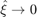 as fast as possible. To do so, we take a step in the opposite direction of the gradent of the error surface, i.e.


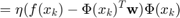
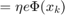